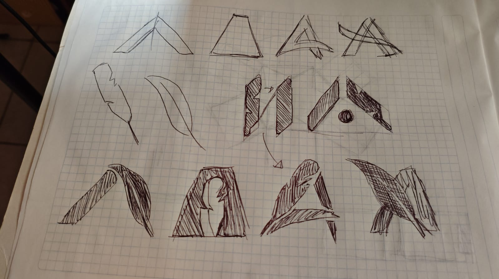
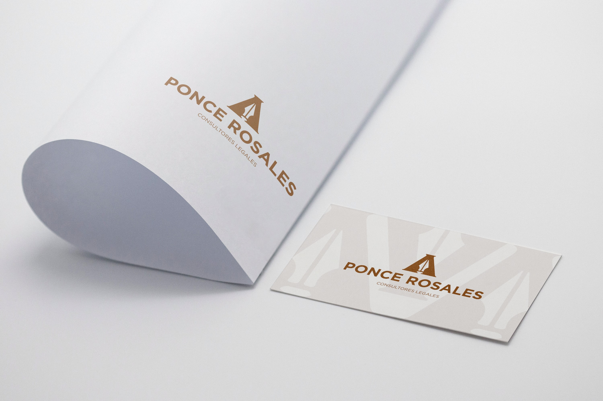
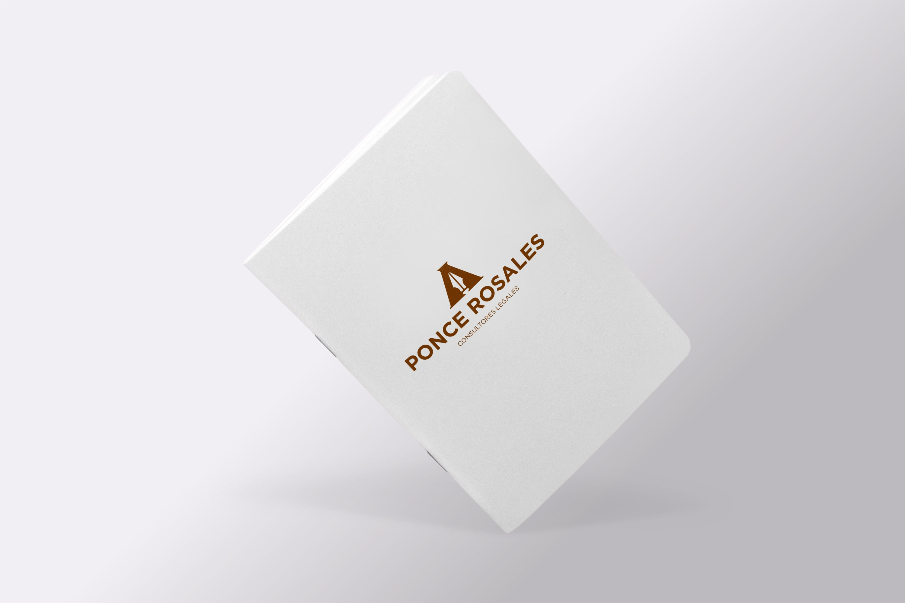
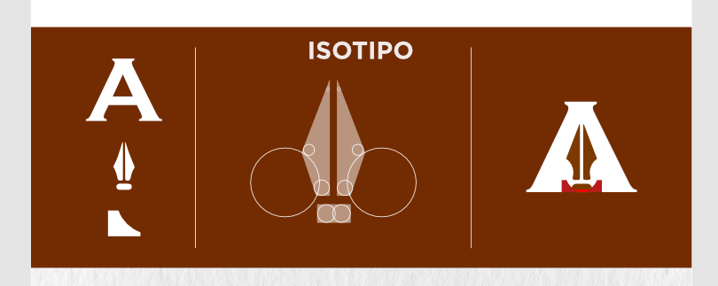

Ponce Rosales
Identidad para despacho legal
El proyecto en dos líneas
Ponce Rosales es un despacho jurídico en Jalisco especializado en derecho empresarial y laboral. Querían una imagen profesional que transmitiera experiencia y autoridad, pero sin verse como todos los demás abogados.
El problema concreto
El sector legal en México está plagado de marcas anticuadas: balanzas de la justicia, colores navales y tipografías serif pesadas. Ponce Rosales quería diferenciarse. El reto fue construir una identidad que proyectara autoridad sin parecer otro despacho más del montón.
Proceso y decisiones clave
Empecé con una auditoría de los 10 despachos más reconocidos en Jalisco. El patrón era claro: todos usaban azul marino, serif antiguo y símbolos de justicia. Mi estrategia fue apuntar al espacio opuesto.
- Elegí una paleta oscura y premium (casi negra con un acento dorado) que transmite exclusividad sin exagerar.
- La tipografía combina una serif moderna (elegante, sin ser anticuada) con una sans-serif limpia para textos secundarios.
- Descartamos el uso de figuras legales icónicas porque reforzaban exactamente el estereotipo que queríamos evitar.
Galería





Impacto y resultados
El cliente reportó que sus clientes potenciales comenzaron a percibirlo como una firma "de otro nivel" desde el primer contacto. La nueva identidad les permitió elevar sus tarifas y atraer un perfil de cliente más cercano al segmento empresarial que buscaban.
Lo que aprendí
En sectores muy tradicionales, el mayor reto no es el diseño en sí, sino convencer al cliente de que diferenciarse no es arriesgado, es necesario. Este proyecto me enseñó a respaldar cada decisión visual con argumentos estratégicos concretos.